P3 - Uzun LED devresi (20 LED, 11 pin 1.0 mm)
Oluşturma: 13.11.2026 19:24 · Kaynak: docs/K.pdf · fpc-vektor skill
Özet
20 LED'li arka aydınlatma katmanı (0402 LED). İki gümüş baskı (alt hatlar + dielektrik üstü köprüler), dielektrik köprü yamaları, 11 pinlik 1.0 mm ZIF kuyruğu; LED'ler matris bağlı (her pin birden çok LED'i sürüyor). P4 tuş katmanıyla üst üste biner: LED'ler P4'ün 20 oval penceresinin altındadır.
Bu rapor nasıl incelenir?
_kontrol_taramali.svg dosyasında çizim, hizalanmış taramanın üstündedir. CorelDRAW'da tarama katmanını kilitleyip katmanları tek tek açıp kapatarak karşılaştırın.Analiz süreci
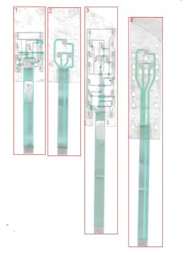
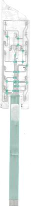
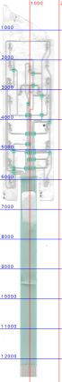
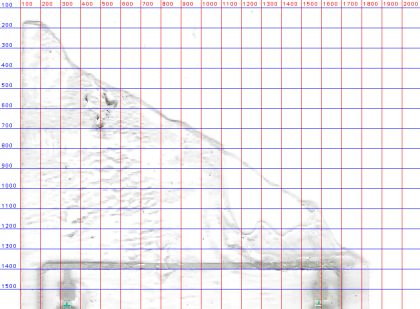
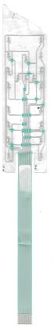
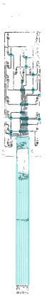
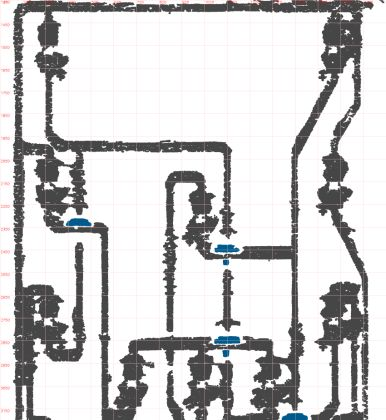
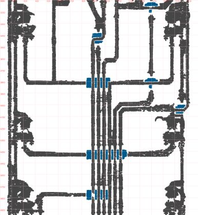
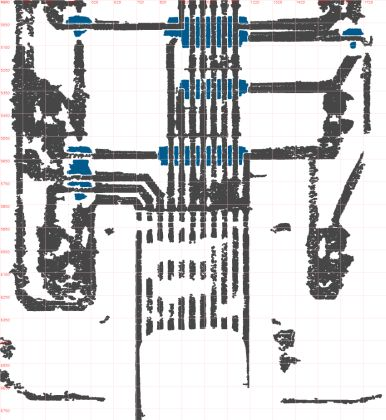
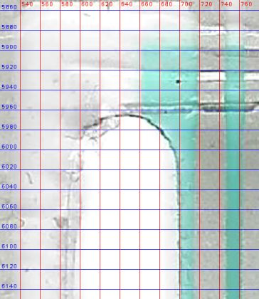
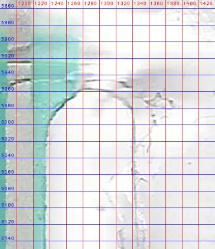
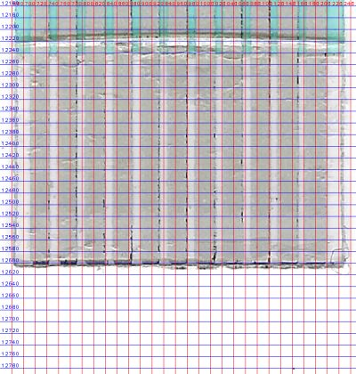
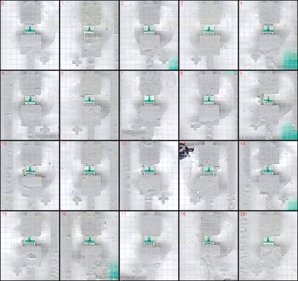
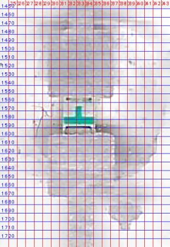
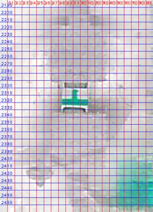
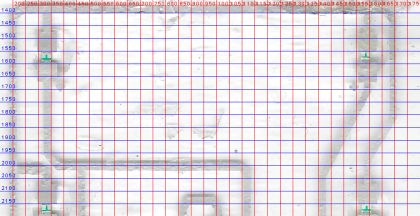
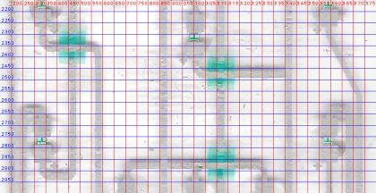
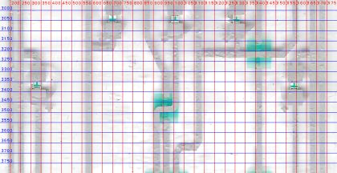
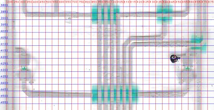
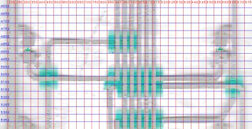
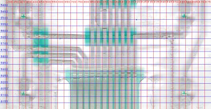
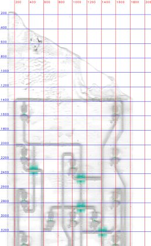
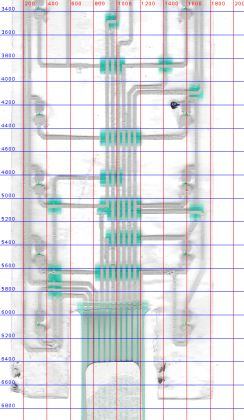
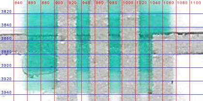
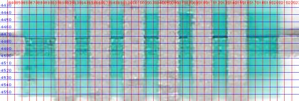
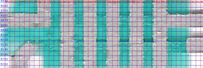
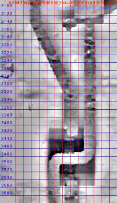
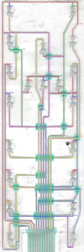
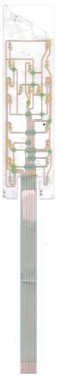
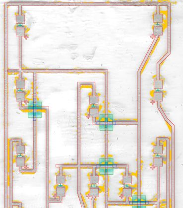
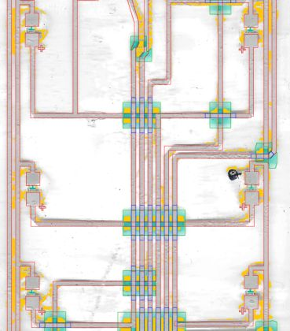
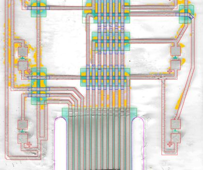
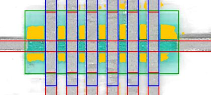
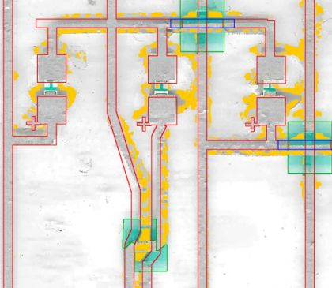
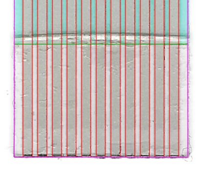
Bulgular
- Yapı: alt gümüş + 16 dielektrik köprü yaması + üst gümüş köprüler (45 parça) + 20 LED + '+' işaretleri; kuyrukta dielektrik, takviye ve etiket.
- Matris bağlantı: üst pedler pin 1/2/3/4/5/7'ye, alt pedler pin 4/6/7/8/9/10/11'e. L2 ve R4 aynı pin çiftinde (7–8), paralel.
- L5 ve R5 alt pedleri y≈4487 px yaması altında yalnızca birbirine bağlı; çizimde pinsiz. Taramada yama içinde altı dikeyin hepsi üstten geçiyor görünüyor; ya bir dikey aslında alttan geçiyor ya da bağlantı bulanıklıkta okunamıyor.
- Çizimde pin 1 (R1 ortak) ile pin 8 (Y) aynı ağda: V465 hattı sol alt döngüyle birleşik görünüyor. Kısa devre yaratmıyor ama iki pinli ağ şüpheli.
- LED konumları P4 ovalleriyle x'te ≤ 0.11 mm, y'de (sabit 2.6 mm kayma dışında) ≤ 0.21 mm örtüşüyor. P3 başı LED'lere göre P4'ten 2.6 mm kısa: üst kenar da kırpılmış olabilir.
- Kuyruk P4 ile aynı biçimde baş altında 11.35 mm, sonra 11.8 mm — bu bir kesim tasarımı (iki parçada birden).
- Konnektörde dummy yok: 11 kontağın hepsi kullanılıyor.
- Film sağ yarıda camdan kalkık: hatlar bulanık, doku eşiği çalışmıyor; yatay hatların 20–28 px üstünde gölge kopyası var.
- Düzeltmelerden sonra kalan HATA'lar: L5/R5 alt (önceden biliniyordu) ve R6 alt (birleşik çift yama).
Karar noktaları
Ölçümün tek başına yetmediği, yorum veya kullanıcı tercihi gerektiren noktalar. Katılmadığınız kararı numarasıyla bildirin.
- Devam et, işaretle
- Yeni tarama
- Multimetreyle doğrulama
- Dikdörtgen + kontrol izi
- Taramadaki gibi kesik
- Doku maskesi (m_top | m_under)
- Koyuluk maskesi (m_dark)
- Maske örneklemesi (P1 yöntemi)
- Renk örneklemesi (gri / koyu turkuaz)
- Çaprazlama: Z → poz 5, B2 → poz 4
- Düz: Z → poz 4, B2 → poz 5
- Sol dış hatta bağlı
- Boşluk var
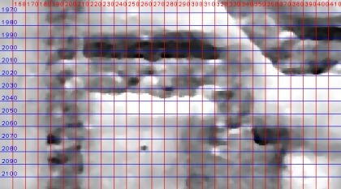
- R1 ortak → pin 1
- R1 ortak → pin 8
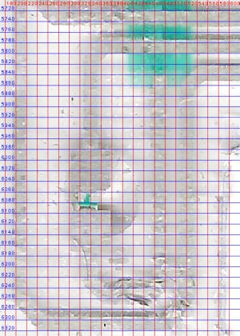
- ROI'yi daralt
- Kümeleri sınıflandırıp rapora yaz
- Düzelt (köprü uç kuralı)
- Olduğu gibi bırak
Ölçüler ve eleman sayıları
| Ölçü | Değer | Not |
|---|---|---|
| Baş (genişlik × yükseklik) | 36.6 × 138.55 mm | köşe R0.3; sağ üst köşe numunede kesik |
| Toplam boy | 263.4 mm | |
| Kuyruk genişliği | 11.35 → 11.8 mm | y=138.2–159.4 arasında genişler |
| Yarık | 2.1 mm | üst ucu y=122.6 |
| Konnektör | 11 poz × 1.0 mm | kontak 0.6 mm, dummy yok |
| Hat genişliği | 0.5 mm | |
| LED pedi | 1.65 × 1.6 mm | boşluk 0.85 mm, LED gövdesi 0.5 × 1.0 mm |
| Polarite işareti | + 0.8 mm, çizgi 0.15 mm | gümüş baskı, alt ped yanında |
| Köprü bindirmesi | 0.4 mm | yama kenarından dışarı |
| Kart sınır kutusu | 36.60 × 263.40 mm | Kesim konturu |
| Kart alanı | 6473.4 mm² | |
| Gümüş alanı (alt baskı) | 1593.4 mm² | |
| Dielektrik alanı | 1791.6 mm² | |
| Köprü alanı (2. gümüş baskı) | 84.07 mm² | 40 köprü |
Eleman sayıları
| Eleman | Adet |
|---|---|
| Hat (polyline) | 58 |
| Gümüş dikdörtgen (ped/blok/parmak) | 40 |
| Oval pencere | 0 |
| LED | 20 |
| Dielektrik yama | 16 |
| Köprü | 40 |
| Kontrol (belirsiz) rota | 12 |
Varsayımlar
- Ölçek 47.17 px/mm (setin ortak kalibrasyonu); P3 kuyruğunda adım 0.998 mm ölçüldü.
- Baş sağ üst bölgesi numunede çapraz kesik/yırtık; kesim konturu P4 gibi dikdörtgen çizildi, taramadaki kenar Kontrol katmanında ayrıca verildi.
- Film sağ yarıda camdan kalkık (bulanık): hat maskesi doku yerine koyuluktan (m_dark) çıkarıldı; yatay hatların konumu gölge kopyasından etkilenmeyen alt kenardan alındı.
- Köprülerde üst/alt seçimi yama içinde renkten yapıldı (gri = üst baskı, koyu turkuaz = alt baskı).
- LED ped/gövde ölçüleri P1 şablonu: kaplama damlaları ped kenarlarını örtüyor.
- Kesim deseni baskıya göre ~0.1° dönük; çizimde ideal hizalı alındı.
Doğrulama (taramaya bindirme)
Kabul durumu: KALDI · ROI y = [1350, 5900] px
| Metrik | Değer | Eşik | Sonuç |
|---|---|---|---|
| Gümüş kenar sapması medyan | 0.064 mm | ≤ 0.06 mm | ✘ kaldı |
| Gümüş kenar sapması %90 | 0.171 mm | ≤ 0.15 mm | ✘ kaldı |
| Gümüş kenar kapsaması | 0.803 | ≥ 0.8 | ✔ geçti |
| Taramada karşılıksız gümüş (gölge hariç) | 0.162 | ≤ 0.15 | ✘ kaldı |
| Ağ / tutarlılık HATA (bilinmeyen) | 2 | ≤ 0 | ✘ kaldı |
| Gümüş sistematik ofset (her yan) / kayma | -0.025 mm / (+0.000, +0.037) mm | |ofset| uyarı > 0.03 | bilgi |
| Gümüş işaretli sapma medyanı | -0.030 mm | + geniş / − dar | bilgi |
| Gümüş yoğunluk kenarı (maskeden bağımsız) medyan / %90 | 0.045 / 0.090 mm | kapsama 0.87; ±6 px dışı sapma ölçülmez (kapı değil) | bilgi |
| Gümüş yoğunluk ofseti / kayma / bulanıklık σ | -0.027 mm / (-0.001, +0.007) mm / 0.020 mm | maske ofsetiyle farkı = maske yanlılığı | bilgi |
| Gümüş: tarama kenarlarının çizime ≤ 3 px oranı | 0.367 | bilgi (ters yön) | bilgi |
| Gümüş IoU | 0.563 | bilgi | bilgi |
| Taramada karşılıksız gümüş (ham / gölge hariç) | 0.207 / 0.162 | kapıda gölge hariç | bilgi |
| Gölge ofseti δ (genel) / kalkık karo | 0.30 mm / 3 | golge_haritasi.png | bilgi |
| Gümüş kenar (eski tam-piksel yöntem) medyan / %90 | 0.042 / 0.131 mm | önceki sürümle kıyas | bilgi |
En büyük sapmalı elemanlar
| Eleman | Tür | Medyan |sapma| mm | Ofset mm | Kayma (x, y) mm | Kapsama | Örnek |
|---|---|---|---|---|---|---|
| Kopru_10_X_R3R4 | kopru | 0.222 | -0.021 | (+0.000, +0.097) | 0.36 | 96 |
| X_R3R4 | hat | 0.158 | -0.018 | (+0.000, +0.008) | 0.44 | 167 |
| Z_hat | hat | 0.149 | +0.079 | (+0.000, -0.147) | 0.41 | 306 |
| B3_alt | hat | 0.137 | +0.035 | (+0.084, +0.000) | 0.38 | 24 |
| Kopru_59_L7R7_alt | kopru | 0.113 | +0.123 | (+0.000, +0.036) | 0.36 | 56 |
| Kopru_09_X_L3 | kopru | 0.099 | -0.004 | (-0.052, +0.000) | 0.45 | 110 |
| R5_ust | hat | 0.180 | -0.093 | (+0.052, -0.047) | 0.80 | 69 |
| LED_L7_ped_ust | led_ped | 0.164 | -0.015 | (-0.074, +0.000) | 0.57 | 80 |
| L4_ust | hat | 0.159 | -0.073 | (-0.086, -0.090) | 0.59 | 78 |
| Kopru_45_Z_hat | kopru | 0.154 | -0.148 | (+0.000, +0.037) | 0.54 | 56 |
| LED_R2_ped_ust | led_ped | 0.149 | -0.050 | (-0.041, +0.184) | 0.77 | 79 |
| L6_ust | hat | 0.148 | +0.034 | (-0.061, +0.117) | 0.66 | 86 |
Düzeltme yönü: eleman ofset kadar daraltılır, kaymanın tersine taşınır. Tüm elemanlar: work/<ad>/eleman_sapma.json.
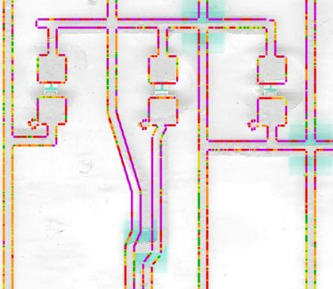
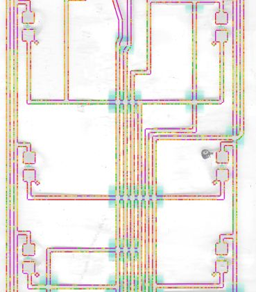
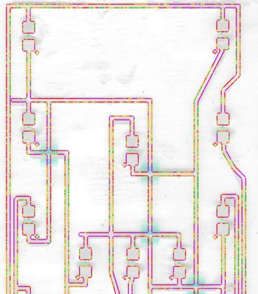
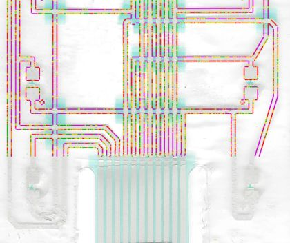
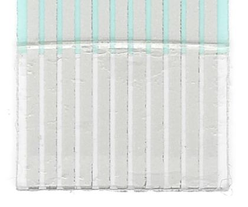
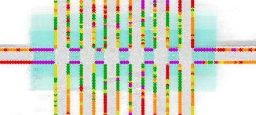
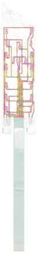
Ağ ve tasarım tutarlılığı
Çizim geometrisinden (taramadan bağımsız) çıkarılan elektrik ağları ve çizim kontrolleri. HATA 2, UYARI 20, bilgi 28, kullanıcı tarafından kabul edilmiş 0. Bilinmeyen HATA kabul kapısını düşürür; bilerek kabul edilenler parts/<ad>.json → kabul_edilen_bulgular ile işaretlenir.
| Seviye | Kontrol | Açıklama | Konum (mm) | Kimlik |
|---|---|---|---|---|
| HATA | Cihaz ucu hiçbir pine ulaşmıyor | Hiçbir pine ulaşmayan ağ: LED_L5.alt, LED_R5.alt (kopukluk veya eksik hat) | (5.07, 88.24) | pinsiz_ag:LED_L5.alt,LED_R5.alt |
| HATA | Cihaz ucu hiçbir pine ulaşmıyor | Hiçbir pine ulaşmayan ağ: LED_R6.alt (kopukluk veya eksik hat) | (31.68, 100.81) | pinsiz_ag:LED_R6.alt |
| UYARI | Bitişik olmayan pinler aynı ağda | Pinler 1, 8 aynı ağda (bitişik değil: şüpheli) | (12.77, 62.02) | ayrik_pinler:1,8 |
| UYARI | Eleman taramada doğrulanamadı | 'B3_alt' kenar örneklerinin yalnız %38'i taramada karşılık buldu (eleman yanlış yerde ya da referans maske bu bölgede eksik; ısı haritasında mor) | (25.65, 63.45) | eleman_eslesmedi:B3_alt |
| UYARI | Eleman taramada doğrulanamadı | 'Kopru_09_X_L3' kenar örneklerinin yalnız %45'i taramada karşılık buldu (eleman yanlış yerde ya da referans maske bu bölgede eksik; ısı haritasında mor) | (7.73, 46.06) | eleman_eslesmedi:Kopru_09_X_L3 |
| UYARI | Eleman taramada doğrulanamadı | 'Kopru_10_X_R3R4' kenar örneklerinin yalnız %36'i taramada karşılık buldu (eleman yanlış yerde ya da referans maske bu bölgede eksik; ısı haritasında mor) | (27.93, 64.06) | eleman_eslesmedi:Kopru_10_X_R3R4 |
| UYARI | Eleman taramada doğrulanamadı | 'Kopru_59_L7R7_alt' kenar örneklerinin yalnız %36'i taramada karşılık buldu (eleman yanlış yerde ya da referans maske bu bölgede eksik; ısı haritasında mor) | (7.81, 115.75) | eleman_eslesmedi:Kopru_59_L7R7_alt |
| UYARI | Eleman taramada doğrulanamadı | 'X_R3R4' kenar örneklerinin yalnız %44'i taramada karşılık buldu (eleman yanlış yerde ya da referans maske bu bölgede eksik; ısı haritasında mor) | (26.17, 64.06) | eleman_eslesmedi:X_R3R4 |
| UYARI | Eleman taramada doğrulanamadı | 'Z_hat' kenar örneklerinin yalnız %41'i taramada karşılık buldu (eleman yanlış yerde ya da referans maske bu bölgede eksik; ısı haritasında mor) | (17.98, 56.92) | eleman_eslesmedi:Z_hat |
| UYARI | Elemanın taramadan sapması büyük | 'B1_ust' medyan sapma 0.112 mm (ofset -0.107, kayma -0.019/+0.000 mm) | (12.79, 57.89) | eleman_sapma:B1_ust |
| UYARI | Elemanın taramadan sapması büyük | 'Kopru_33_C1_alt' medyan sapma 0.127 mm (ofset +0.037, kayma +0.000/-0.136 mm) | (21.59, 48.63) | eleman_sapma:Kopru_33_C1_alt |
| UYARI | Elemanın taramadan sapması büyük | 'Kopru_45_Z_hat' medyan sapma 0.154 mm (ofset -0.148, kayma +0.000/+0.037 mm) | (21.61, 56.91) | eleman_sapma:Kopru_45_Z_hat |
| UYARI | Elemanın taramadan sapması büyük | 'L3_ust' medyan sapma 0.112 mm (ofset +0.002, kayma -0.026/-0.036 mm) | (4.4, 52.11) | eleman_sapma:L3_ust |
| UYARI | Elemanın taramadan sapması büyük | 'L4_ust' medyan sapma 0.159 mm (ofset -0.073, kayma -0.086/-0.090 mm) | (4.45, 64.58) | eleman_sapma:L4_ust |
| UYARI | Elemanın taramadan sapması büyük | 'L5R5_alt' medyan sapma 0.112 mm (ofset +0.007, kayma +0.120/+0.101 mm) | (18.45, 91.14) | eleman_sapma:L5R5_alt |
| UYARI | Elemanın taramadan sapması büyük | 'L6_ust' medyan sapma 0.148 mm (ofset +0.034, kayma -0.061/+0.117 mm) | (4.51, 96.49) | eleman_sapma:L6_ust |
| UYARI | Elemanın taramadan sapması büyük | 'R3_ust' medyan sapma 0.117 mm (ofset -0.078, kayma +0.015/-0.007 mm) | (32.15, 51.91) | eleman_sapma:R3_ust |
| UYARI | Elemanın taramadan sapması büyük | 'R5_ust' medyan sapma 0.180 mm (ofset -0.093, kayma +0.052/-0.047 mm) | (32.28, 84.05) | eleman_sapma:R5_ust |
| UYARI | Hattın ucu boşta | 'Z_hat' hattının başı hiçbir gümüşe değmiyor (açık uç) | (11.85, 56.91) | serbest_uc:Z_hat:bas |
| UYARI | Farklı ağlar çok yakın / uç kısa | Nb ile R2_alt arası 0.033 mm (değmesi gerekiyorsa uç kısa; değilse aralık dar) | (33.77, 82.77) | yakin_bosluk:Nb/R2_alt |
| UYARI | Farklı ağlar çok yakın / uç kısa | R1_ortak ile X_hat arası 0.138 mm (değmesi gerekiyorsa uç kısa; değilse aralık dar) | (2.49, 38.28) | yakin_bosluk:R1_ortak/X_hat |
| UYARI | Köprü altı yalıtım payı dar | 'Kopru_34_R2_alt' altındaki kesişmede yalıtkan payı < 0.15 mm | (33.5, 83.03) | yalitim_payi:Kopru_34_R2_alt:33.5,83.0 |
Çizimden çıkarılan ağlar
| Ağ | Pinler | Uçlar (LED/ped) | Hat sayısı |
|---|---|---|---|
| 1 | 1, 8 | LED_B1.alt, LED_L1.ust, LED_L2.alt, LED_L4.alt, LED_L8.alt, LED_R1.ust, LED_R2.ust, LED_R4.alt | 19 |
| 2 | 2 | LED_L8.ust | 2 |
| 3 | 3 | LED_L3.ust, LED_L4.ust, LED_L5.ust, LED_L6.ust, LED_L7.ust | 11 |
| 4 | 4 | LED_B1.ust, LED_B2.ust, LED_B3.ust, LED_C1.ust, LED_L6.alt, LED_R8.ust | 13 |
| 5 | 5 | LED_R3.ust, LED_R5.ust, LED_R6.ust, LED_R7.ust | 9 |
| 6 | 6 | LED_B2.alt | 2 |
| 7 | 7 | LED_B3.alt, LED_L1.alt, LED_L2.ust, LED_L3.alt, LED_R3.alt, LED_R4.ust | 14 |
| 8 | 9 | LED_C1.alt, LED_R1.alt | 4 |
| 9 | 10 | LED_R2.alt | 2 |
| 10 | 11 | LED_L7.alt, LED_R7.alt, LED_R8.alt | 6 |
| 11 | PİNSİZ | LED_L5.alt, LED_R5.alt | 3 |
| 12 | PİNSİZ | LED_R6.alt | 2 |
Bu tablo RAPOR pin eşlemesiyle karşılaştırılmalıdır; fark varsa ya çizim ya da eşleme yanlıştır.
Otomatik onarımlar
- Uç kenetleme: X_hat bas ucu: 0.138 mm boşluk -> 'R1_ortak' (reddedildi: iki pinli ağı birleştirir (pin [7] / [1, 8]))
- Köprü uç kuralı: 'Poz7' yama içindeki parçası alt baskıya alındı
- Köprü uç kuralı: 'R6_alt' yama içindeki parçası alt baskıya alındı
- Köprü uç kuralı: 'Poz10' yama içindeki parçası alt baskıya alındı
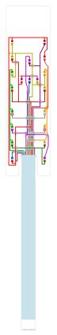
Önerilen düzeltmeler (ölçümden)
Yoğunluk kenarı ölçümünden (maskeden bağımsız) çıkarılan somut düzeltmeler; otomatik uygulanmaz. Tasarım niyetiyle (simetri, ortak adım) çelişen öneri varsa ölçüm analiz kaydına yazılır, niyet korunur. Şablon/tahmin elemanların (LED pedleri) önerileri kaplama altı belirsizliği taşır.
| Tür | Öneri |
|---|---|
| genislik | 0.5 mm hatlar (44 hat) taramada her yandan -0.029 mm farklı: ölçülen genişlik ≈ 0.557 mm -> 0.55 mm (0.05'e yuvarlı) |
| eleman | 'LED_C1_ped_alt' (led_ped, şablon/tahmin) taramaya göre (-0.015, +0.215) mm kaymış -> (+0.015, -0.215) mm taşı |
| eleman | 'B3_ust' (hat) taramaya göre (-0.006, +0.194) mm kaymış -> (+0.006, -0.194) mm taşı |
| eleman | 'LED_L5_ped_alt' (led_ped, şablon/tahmin) taramaya göre (+0.111, +0.163) mm kaymış -> (-0.111, -0.163) mm taşı |
| eleman | 'R4_alt' (hat) taramaya göre (+0.006, +0.126) mm kaymış -> (-0.006, -0.126) mm taşı |
| eleman | 'Kopru_55_Q_R8' (kopru) taramaya göre (-0.115, +0.012) mm kaymış -> (+0.115, -0.012) mm taşı |
| eleman | 'LED_R4_ped_alt' (led_ped, şablon/tahmin) taramaya göre (+0.001, +0.101) mm kaymış -> (-0.001, -0.101) mm taşı |
| eleman | 'LED_C1_ped_alt' (led_ped) her yandan +0.101 mm geniş |
| eleman | 'LED_B2_ped_alt' (led_ped, şablon/tahmin) taramaya göre (+0.047, +0.092) mm kaymış -> (-0.047, -0.092) mm taşı |
| eleman | 'LED_B3_ped_alt' (led_ped, şablon/tahmin) taramaya göre (+0.019, +0.091) mm kaymış -> (-0.019, -0.091) mm taşı |
| eleman | 'L4_ust' (hat) taramaya göre (-0.086, -0.090) mm kaymış -> (+0.086, +0.090) mm taşı |
| eleman | 'Poz7' (hat) taramaya göre (+0.009, -0.083) mm kaymış -> (-0.009, +0.083) mm taşı |
| eleman | 'LED_R2_ped_alt' (led_ped, şablon/tahmin) taramaya göre (-0.009, +0.082) mm kaymış -> (+0.009, -0.082) mm taşı |
| eleman | 'LED_R5_ped_alt' (led_ped, şablon/tahmin) taramaya göre (+0.078, +0.066) mm kaymış -> (-0.078, -0.066) mm taşı |
| eleman | 'Kopru_34_R2_alt' (kopru) her yandan -0.077 mm dar |
| eleman | 'LED_R3_ped_alt' (led_ped, şablon/tahmin) taramaya göre (-0.017, +0.075) mm kaymış -> (+0.017, -0.075) mm taşı |
| eleman | 'L4_ust' (hat) her yandan -0.073 mm dar; genişlik 0.5 -> 0.646 mm |
| eleman | 'LED_B1_ped_alt' (led_ped, şablon/tahmin) taramaya göre (-0.018, +0.073) mm kaymış -> (+0.018, -0.073) mm taşı |
| eleman | 'LED_L3_ped_alt' (led_ped, şablon/tahmin) taramaya göre (-0.031, +0.071) mm kaymış -> (+0.031, -0.071) mm taşı |
| eleman | 'LED_L2_ped_alt' (led_ped, şablon/tahmin) taramaya göre (+0.013, +0.066) mm kaymış -> (-0.013, -0.066) mm taşı |
Konnektör pin eşlemesi
| Pin | Bağlantı |
|---|---|
| 1 | R1 ortak: üst yatay + sol dış hat (sol alt döngü üzerinden); çizimde pin 8 ile aynı ağ |
| 2 | L8 üst pedi |
| 3 | Na: L3–L7 üst pedleri (sol iç hat) |
| 4 | Z + Q: C1/B1/B2/B3 üst, R8 üst, L6 alt |
| 5 | Nb: R3, R5, R6, R7 üst pedleri (sağ iç hat) |
| 6 | B2 alt |
| 7 | X: L1 alt, L2 üst, L3 alt, R3 alt, R4 üst, B3 alt |
| 8 | Y: L2/L4/R4/B1 alt + V465 (+ R1 ortak) |
| 9 | R1 alt + C1 alt |
| 10 | R2 alt + R6 alt |
| 11 | L7/R7/R8 alt |
Fiziksel parçada kontrol edilecekler
İşaretledikleriniz bu tarayıcıda saklanır. Multimetre süreklilik testiyle doğrulayıp sonucu 'Pin 5 ↔ LED B1 üst ped: süreklilik VAR' biçiminde iletin.
Daha iyi sonuç için yapabilecekleriniz
Analiz görselleri
Analiz sırasında üretilen tüm görseller. Açıklamalı olanlar analiz kaydından, diğerleri dosya adından otomatik açıklanmıştır. Izgara etiketleri tarama pikseli (1 mm = 47.17 px).
Çıktılar ve CorelDRAW
| Dosya | Amaç |
|---|---|
output/P3_duzenlenebilir.svg | CorelDRAW'da düzenleme (hatlar kalınlıklı çizgi, pedler dikdörtgen) |
output/P3_uretim.svg | Üretim: her katman tek kapalı dolgu |
output/P3_uretim.pdf | Üretim: katmanlı vektör PDF |
output/P3_kontrol_taramali.svg | Kontrol: çizim + altta hizalı tarama |
Katmanlar: Takviye (arka yuz, ZIF), Gumus iletken, Dielektrik (yalitkan), Gumus kopru (2. baski, dielektrik ustu), LED (montaj), Etiket (yapistirma), Kontrol (taramadan kesin okunamayan), Kesim (dis kontur + pencereler)
CorelDRAW'da kullanım
- Dosya > Aç (veya İçe Aktar) ile SVG'yi açın; ölçek 1:1 mm'dir, sayfa her yanda 5 mm boşlukludur.
- Katmanlar üst seviye gruplar olarak gelir (Nesne Yöneticisi). Düzenlemeden önce 'Kesim' ve 'Tarama' gruplarını kilitleyin.
- Düzenlenebilir sürümde hatlar kalınlıklı çizgidir: düğüm taşıyarak rota değiştirin, kalınlığı Kontur penceresinden değiştirin.
- Üretim için dolgu sürümünü (
_uretim.svg/.pdf) kullanın; her baskı katmanı ayrı film/elektir. - Kalıcı değişiklik istiyorsanız ölçüyü
parts/<ad>_design.pyiçinde değiştiripfpc.py all <ad>çalıştırın; böylece doğrulama ve rapor da güncellenir.
Ek: parametreler
| Alan | Değer |
|---|---|
| Kaynak | docs/K.pdf sayfa 1 |
| Kırpım (tarama px) | [4530, 220, 6620, 13010] |
| Eğiklik düzeltmesi | 0.68° |
| Ölçek | 47.17 px/mm |
| Parça tipi | led |
| Tasarım dosyası | parts/p3_design.py |
| Yeniden üretim | python .devin/skills/fpc-vektor/scripts/fpc.py all p3 |